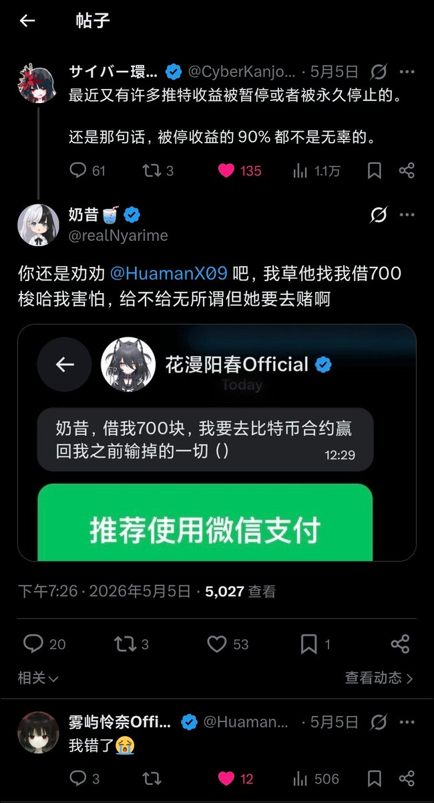
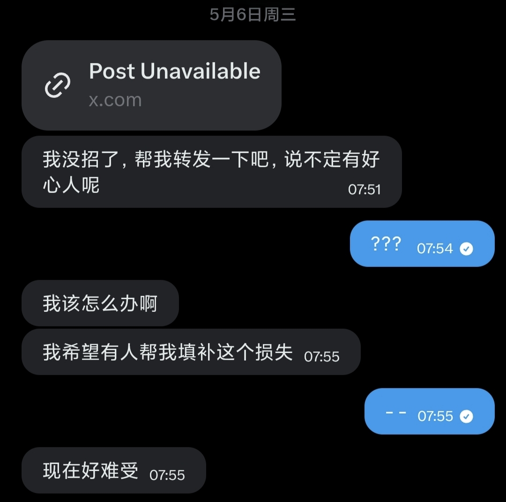

奶昔🥤
@realNyarime
之前想让環状線劝他戒赌的，因为双方bio之前都有对方，希望能救一下爆仓后的赌徒心理，最后导致環状線与 HuamanX09 切割，我的错
被私信说要借钱700块去梭哈，怕的是也找别人这样借，最后不仅一无所有，还欠下坏账一堆。人可以风评再差，但一定要讲信用，这是做人最基本的要求
同时作为一名小博主，我不会去帮人转发要饭的推文。这世界上没有别人会为自己的损失买单，同时本人不提倡也反对任何的网暴行为，也不愿卷入不必要的事端

